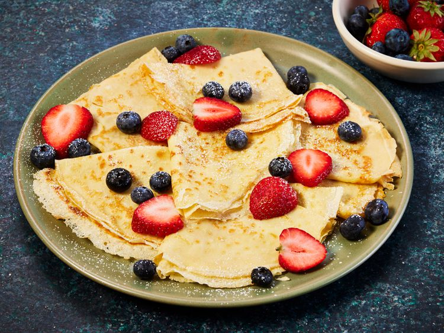
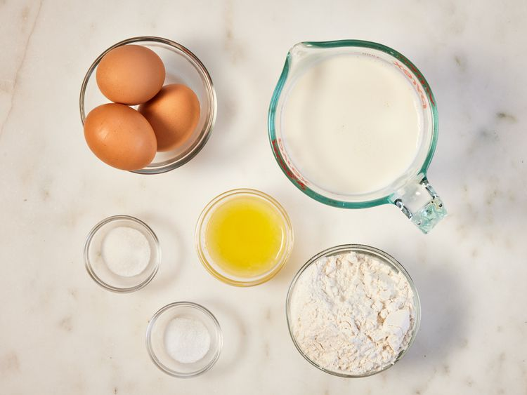
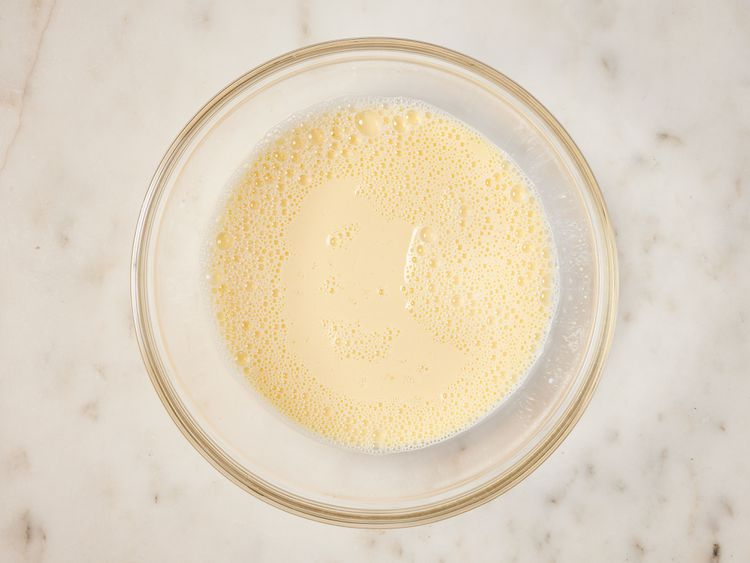
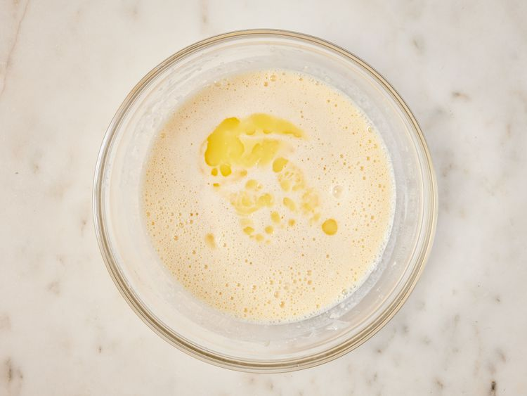
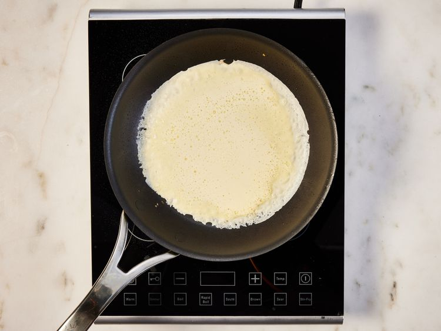
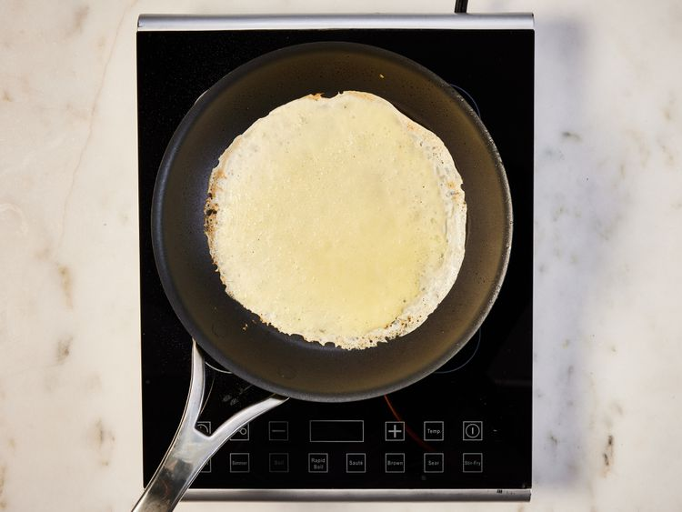
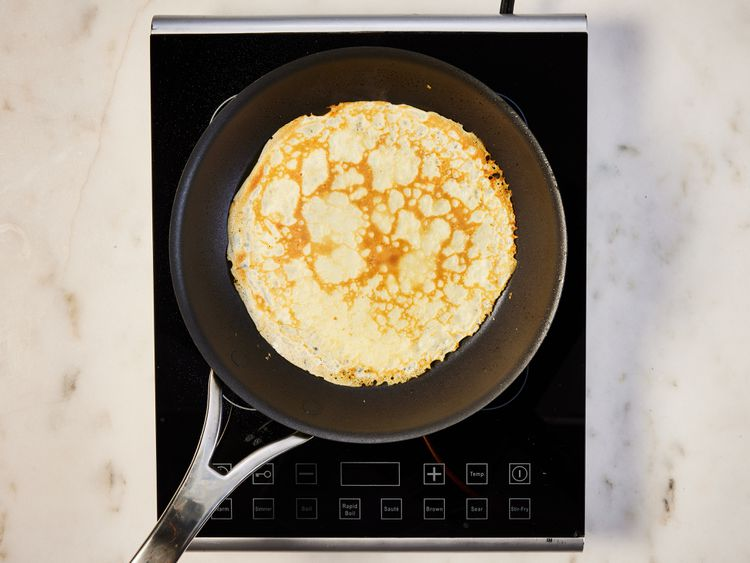

Home
French Crêpes
French Crêpes

About
French crêpes are good for weekend breakfasts, or even for desserts. Serve rolled up and filled with jam or fruit and whipped cream.
These French crêpes are soft, tender, and paper thin. They taste just like they came from a fancy French restaurant!
Ingredients
- 1 cup all-purpose flour
- 1 teaspoon white sugar
- ¼ teaspoon salt
- 3 eggs
- 2 cups milk
- 2 tablespoons butter, melted
Directions
- Gather all ingredients.

- Sift flour, sugar, and salt into a bowl; set aside. Beat eggs and milk together in a large bowl with an electric mixer.

- Beat in flour mixture until smooth; stir in melted butter.

- Lightly grease a griddle or frying pan; heat over medium-high heat. Pour or scoop the batter onto the griddle, using approximately 2 tablespoons for each crêpe.

- Immediately rotate the skillet to spread batter out in a thin layer. Cook until the top of the crêpe is no longer wet and the bottom has turned light brown, 1 to 2 minutes.

- Shake the pan or loosen with a spatula; turn or flip it over and cook until other side has turned light brown, about 1 minute more. Repeat with remaining batter.

- Serve with your choice of fillings or toppings, and enjoy!